この授業では、てこの学習と単純機械の学習を一つにつなげます。単純機械はエネルギーを生み出すものではありません。力をより上手に使えるようにする仕組みです。小さい力で動かせることがありますが、その代わりにより長い距離を動かす必要があることが多いです。
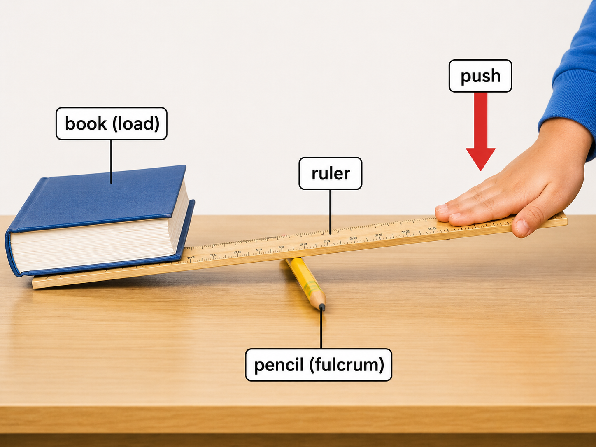
大きな問い
どうすれば小さい力で重い物を動かせるのか。
大切な原則
何もないところから得をすることはできない。
工学的な考え方
力が小さくなれば、その分だけ距離が大きくなることが多い。
授業の流れ
重要語句
まずは基本的な用語を確認します。
| 用語 | 簡単な意味 |
|---|---|
| force / 力 | 押す力または引く力 |
| load / 荷重 | 動かしたい物体や重さ |
| effort / 力点 | 私たちが加える力 |
| fulcrum / 支点 | てこが回る支えの点 |
| distance / 距離 | どれだけ動いたか |
| work / 仕事 | 力 × 距離 |
| mechanical advantage / 力の有利さ | 機械がどれだけ力を助けるか |
| friction / 摩擦 | 動きをじゃまする力 |
| inclined plane / 斜面 | ランプや坂 |
| wedge / くさび | 材料を分けるための、動く斜面 |
| screw / ねじ | 円柱のまわりに巻かれた斜面 |
1. 復習：力・距離・仕事
単純機械を学ぶ前に、3つの基本を思い出します。
力は押す力または引く力です。距離は、どれだけ動いたかです。仕事は、力によって物体が動くことです。
W = 仕事（J）
F = 力（N）
s = 距離（m）
壁を押しても壁が動かなければ、力は使っていますが、有用な機械的仕事はしていません。病院のベッドを押してベッドが動けば、仕事をしたことになります。
例
力 = 50 N
距離 = 4 m
W = 50 × 4 = 200 J
2. てこの考え方
てこは、もっとも古く、もっとも重要な単純機械のひとつです。
てこには3つの要素があります。力点、荷重点、支点です。力点は私たちが力を加える場所です。荷重点は動かしたい物体がある場所です。支点は回転の中心です。
中心となる考え方：支点から遠い場所で力を加えると、小さい力でも大きい荷重を動かせることがあります。
だから長い柄は役に立ちます。長いレンチ、バール、はさみ、ペンチ、多くの医療用具は、この考え方を使っています。
3. てこの公式
てこはトルクの考え方で説明できます。トルクとは回転させる効果です。
単純なつり合いでは、片側の回転効果と反対側の回転効果が等しくなります。
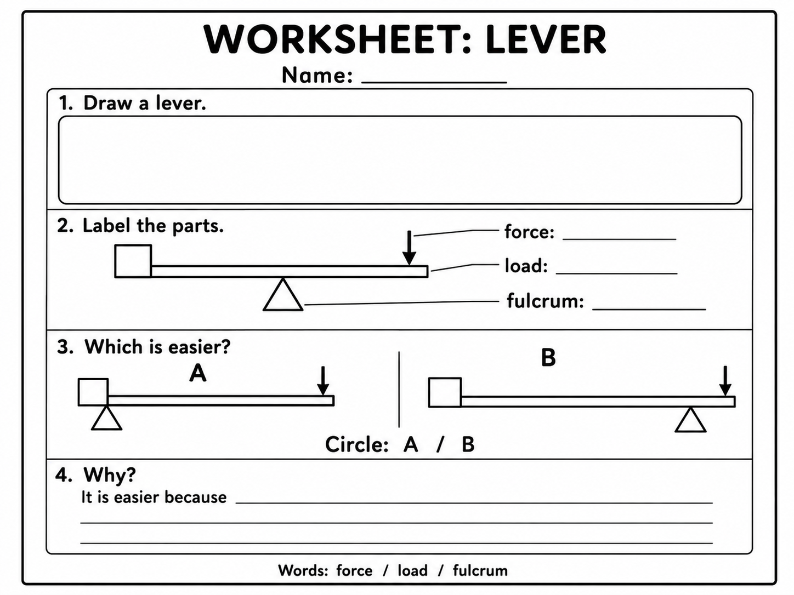
F₁ = 力点の力
d₁ = 支点から力点までの距離
F₂ = 荷重の力
d₂ = 支点から荷重点までの距離
簡単に言うと：小さい力でも、支点から十分に遠い場所で加えれば、大きい荷重とつり合うことができます。
例
力点までの距離 = 2 m
荷重点までの距離 = 0.5 m
荷重 = 100 N
F₁ × 2 = 100 × 0.5
F₁ × 2 = 50
F₁ = 25 N
練習
力点までの距離 = 3 m
荷重点までの距離 = 1 m
荷重 = 90 N
力点の力 = ?
答えを見る
F₁ × 3 = 90 × 1
F₁ = 90 / 3 = 30 N
4. てこの3つの分類
てこは、支点、力点、荷重点の位置によって分類できます。
支点が真ん中。
例：シーソー、はさみ。
荷重点が真ん中。
例：一輪車。
力点が真ん中。
例：ピンセット、人の腕。
暗記しすぎる必要はありません。大事なのは、支点、力点、荷重点を見つけられることです。
教室活動
はさみ、ピンセット、ドアハンドルを見て、支点、力点、荷重点を指さしてみましょう。
5. 力学の黄金律
これは単純機械で最も重要なルールです。
必要な力を小さくできても、その代わりに長い距離を動かす必要があることが多いです。
機械はエネルギーを生み出しません。力と距離の使い方を変えるだけです。
魔法ではありません：てこで小さい力を使えるなら、その代わりにあなたの手は、荷重よりも長い距離を動くことが多いです。
この考え方は、てこ、車輪と車軸、滑車、斜面、くさび、ねじのすべてに共通しています。
6. 車輪と車軸
車輪と車軸は、2つの意味で動きを助けます。
第一に、車輪はすべり摩擦を減らします。引きずるより、転がす方がふつうは楽です。だからベッド、カート、椅子、機器の台には車輪があります。
第二に、大きい車輪と小さい車軸の組み合わせは、回転するてこのように働きます。
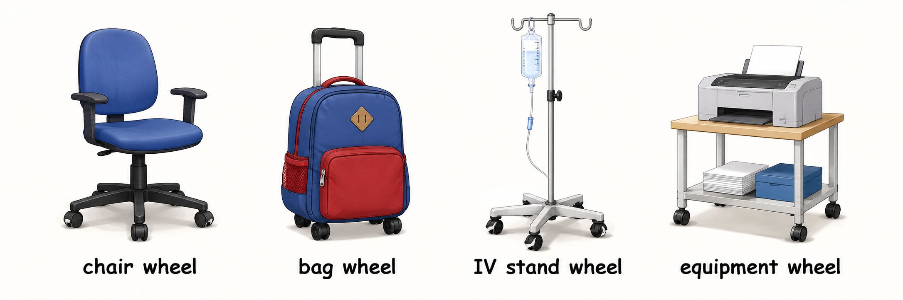
簡単に言うと：大きいハンドルや車輪は回しやすくなりますが、そのぶん手はより長い道を動きます。
病院の例：車輪付きベッドは、車輪のないベッドより動かしやすいです。ただし、車輪は汚れ、損傷、ブレーキの状態を確認しなければなりません。
7. 滑車
滑車は、ロープやベルトをかけた車輪です。滑車は力の向きを変えることができます。複数の滑車を使うと、荷重を持ち上げるために必要な力を小さくすることもできます。
しかし黄金律はここでも同じです。必要な力が小さくなるなら、その分だけより長いロープを引く必要があります。
簡単な例
もし2本のロープが荷重を支えているなら、理想的には必要な力は荷重の半分くらいになります。実際には摩擦があるので少し不利になります。
病院の例：患者リフトや持ち上げ装置には、滑車に近い考え方が使われます。
8. 斜面
斜面はランプや坂です。
物体をまっすぐ上に持ち上げる代わりに、長い道に沿って押したり引いたりします。必要な力は小さくできますが、動く距離は長くなります。
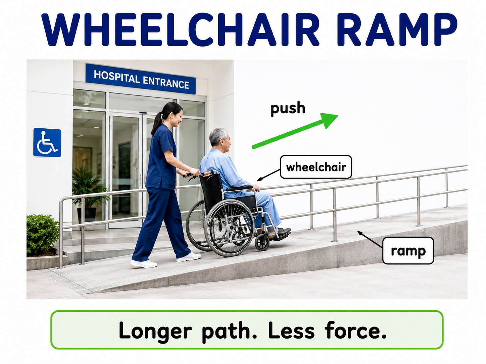
これは車いす、病院カート、配達台車、機器の移動にとても役立ちます。
急な斜面ほど大きい力が必要です。ゆるやかな斜面ほど必要な力は小さくなりますが、斜面は長くなります。
9. 斜面と簡単な三角比
斜面は三角比ともつながります。皆さんは sine を学びました。ここではそれが実際の工学でどう役立つかを見ます。
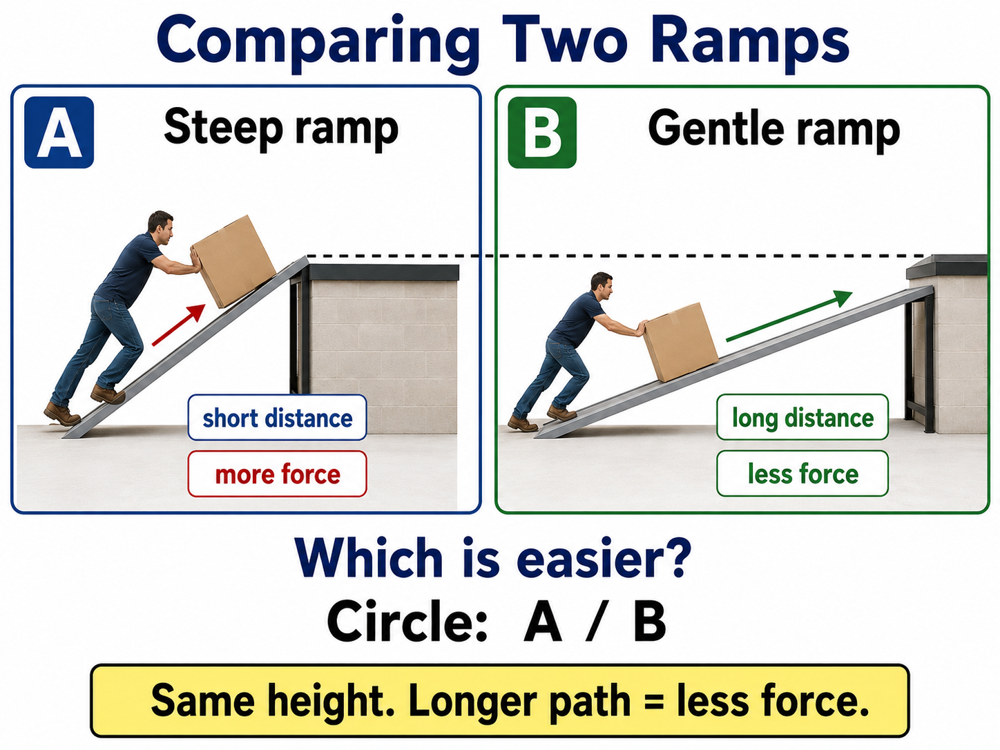
W = 重さ
θ = 斜面の角度
角度が小さいと、sinθ も小さくなります。だから斜面に沿って必要な力も小さくなります。角度が大きいと、sinθ は大きくなり、斜面はより大変になります。
例
重さ = 100 N
θ = 30°
sin30° = 0.5
F = 100 × 0.5 = 50 N
練習
重さ = 200 N
θ = 30°
sin30° = 0.5
斜面に沿う力 = ?
答えを見る
F = 200 × 0.5 = 100 N
10. くさび
くさびは、動く斜面と考えることができます。
くさびを前へ押すと、材料を左右に押し分けます。これによって、割る、切る、分けることができます。
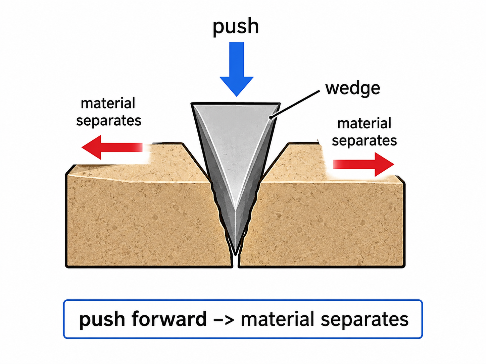
例：ナイフ、メス、針、斧、のみ、はさみの刃。
鋭いくさびは、小さい力で入りやすいですが、その代わりに弱くて壊れやすいことがあります。ここでも工学ではバランスが必要です。
11. 切る道具：メス・針・はさみ
医療用具には単純機械の考え方がたくさん使われています。
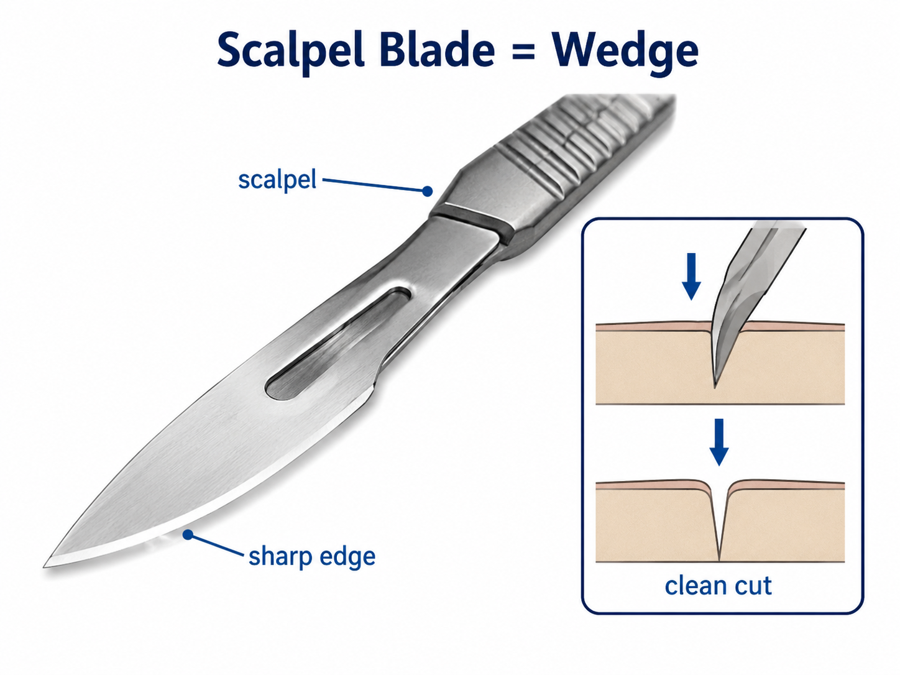
メスの刃はくさびです。前へ押す力を、切り開く力に変えます。
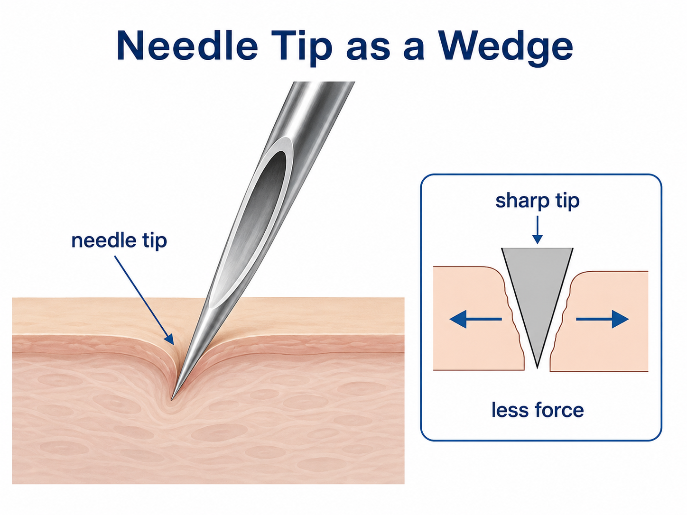
針先も小さなくさびです。小さい力で組織に入るために、十分に鋭くなければなりません。
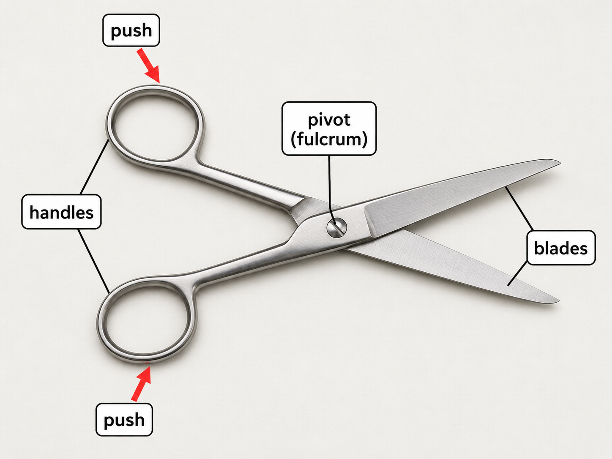
はさみは、もっと複雑です。持ち手の部分はてこで、刃の部分はくさびです。単純機械が組み合わさった良い例です。
12. ねじ
ねじは、円柱のまわりに巻かれた斜面です。
ねじを回すと、ねじ山が材料の中へ前進します。つまり、回転運動を前進運動に変えます。
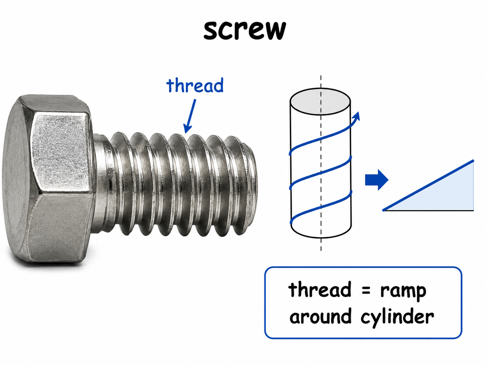
ねじは釘より時間がかかりますが、ねじ山が材料をつかむので、より強く固定できることが多いです。
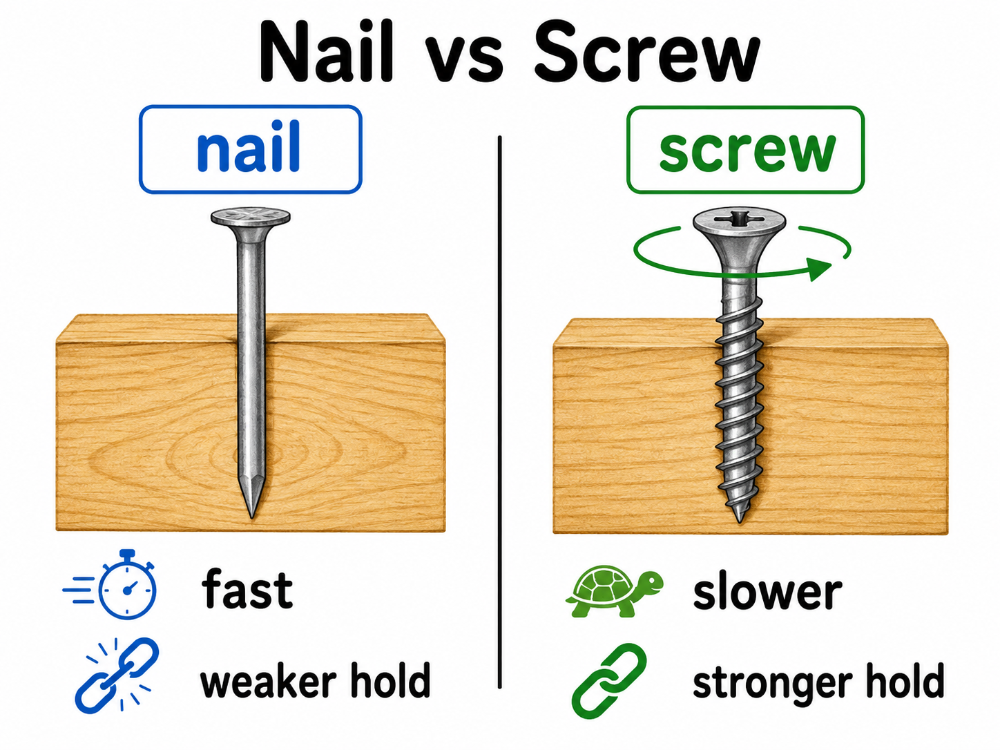
釘：まっすぐ入る。
ねじ：回りながら入り、つかむ。
ITの例：コンピュータや医療機器には多くのねじがあります。ねじのおかげで、組み立て、分解、修理、交換ができます。
13. 病院とIT機器の中の単純機械
単純機械は古い技術だけではありません。現代の機器の中にも入っています。
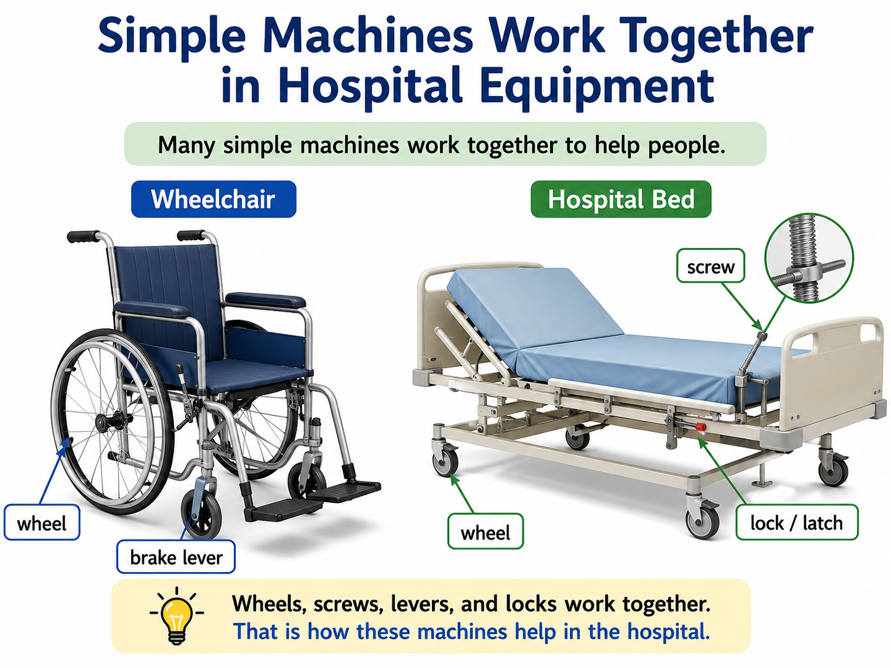
- 病院ベッドには、車輪、ねじ、てこ、リンク機構があります。
- 患者リフトには、滑車やてこの考え方があります。
- はさみ、クランプ、メス、針には、くさびやてこが使われます。
- プリンターには、ローラー、車輪、ねじなどがあります。
- 古いコンピュータや医療機器には、ねじ、ヒンジ、ファン、スライダーがあります。
医療ITの仕事では、これが大切です。単純な機構を理解していれば、古い機器もそれほど怖くなくなります。
14. 教室活動
活動1 — 人間てこモデル
3人の学生で、てこを表してみます。1人は支点、1人は力点、1人は荷重です。力点を支点に近づけたり、遠ざけたりして、いつ楽になるかを考えます。
活動2 — 単純機械さがし
教室の中を見回して、車輪、ねじ、ヒンジ、ハンドル、斜面、くさび、てこを探します。1つ選んで絵を描き、ラベルを付けます。
活動3 — 道具の探偵
はさみ、ペン、ねじ、カッターの写真を見て、それがてこ、くさび、ねじ、車輪のどれか、または複数かを考えます。
15. 練習問題
電卓を使ってよいです。まず公式を書いて、ゆっくり考えましょう。
問題1 — 仕事
力 = 30 N
距離 = 5 m
仕事 = ?
答えを見る
W = F × s = 30 × 5 = 150 J
問題2 — てこ
力点までの距離 = 2 m
荷重点までの距離 = 0.5 m
荷重 = 80 N
力点の力 = ?
答えを見る
F₁ × 2 = 80 × 0.5
F₁ × 2 = 40
F₁ = 20 N
問題3 — てこ
力点の力 = 40 N
力点までの距離 = 3 m
荷重点までの距離 = 1 m
荷重 = ?
答えを見る
40 × 3 = F₂ × 1
120 = F₂
荷重 = 120 N
問題4 — 斜面と sine
重さ = 300 N
θ = 30°
sin30° = 0.5
斜面に沿う力 = ?
答えを見る
F = W × sinθ = 300 × 0.5 = 150 N
問題5 — 概念確認
ねじは何回も回して材料の中へ進みます。これは「タダで得をしている」ことですか。
答えを見る
いいえ。ねじは、小さい力を長い道のりで使っています。これは力学の黄金律に従っています。
16. まとめ
- 単純機械は、力をより上手に使うための仕組みです。
- エネルギーを生み出すわけではありません。
- てこは、支点からの距離を使って力を変えます。
- てこの公式：F₁ × d₁ = F₂ × d₂。
- 黄金律：小さい力を使えるなら、その代わりに距離が大きくなることが多い。
- 車輪と車軸は、摩擦を減らし、動きを助けます。
- 滑車は力の向きを変え、必要な力を小さくできることがあります。
- 斜面は、距離を長くする代わりに力を小さくします。
- くさびは材料を分けます。
- ねじは回転運動を前進運動に変えます。
- 病院やIT機器の中にも、これらの考え方があります。
工学は単純な考え方から始まります。単純機械を理解できれば、より複雑な機械も一歩ずつ理解できます。